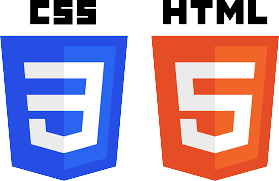

Sobre Mim

- Meu Github
- Meu Linkedin
- Meu Whatsapp
- contatonkfa@gmail.com
- +55 44 99766-6224
- Meu nome é Nicolas Klein e tenho 17 anos.
- Nasci e moro em Maringá-PR
- Possuo fluência em inglês
- Comecei a estudar programação em outubro de 2022.
- Estou finalizando o ensino médio e pretendo cursar Analise e Desenvolvimento de Sistemas.
- Faço projetos utilizando linguagens como: JavaScript, HTML, CSS e Python.
- Utilizo em meus projetos, tecnologias como Node.js e MongoDB.
- Meu principal hobby é jogar, meu gênero favorito é luta.
Habilidades
Python foi a primeira linguagem de programação que eu estudei. Consigo desenvolver interfaces gráficas e automações de atividades. Tenho conhecimento em bibliotecas como Pandas, PyQT, PyAutoGui e Selenium.
HTML e CSS são as principais linguagens que eu utilizo para estruturar e estilizar meus sites. Utilizo ferramentas como o Figma para uma pré-estruturação dos meus sites.
JavaScript é a principal linguagem que estudo hoje em dia. Utilizo ela tanto em sites quanto integrada ao "Node.js" para aplicações backend. Tenho conhecimento em server e banco de dados, para isso, utilizo o Express juntamente ao MongoDB
Projetos
Login com Node.js
Tela de login desenvolvida utilizando o framework "Express" no Node.js para o servidor e o banco de dados do MongoDB Atlas para salvar os dados de usuario. O site e a estilização foram feitas utilizando HTML e CSS.

Site Pomodoro
Site para estudos que usa o metodo "Pomodoro". Site desenvolvido utilizando HTML, CSS e JavaScript. O site consiste em um timer customizado para melhor efetividade do seu estudo e uma lista "To-do" que ajuda na programação de tarefas.

To-do List Python
Lista "To-do" feita utilizando Python. A interface grafica foi feita utilizando a biblioteca "PyQT" e o salvamento dos dados foi feito utilizando o "Pandas" em um arquivo "csv". A lista "To-do" facilita a programação de tarefas cotidianas.